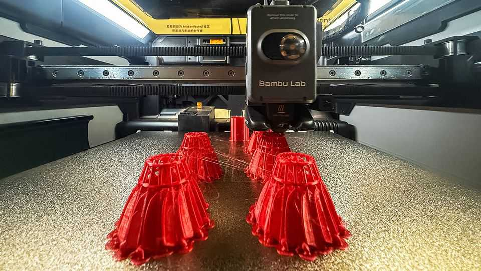
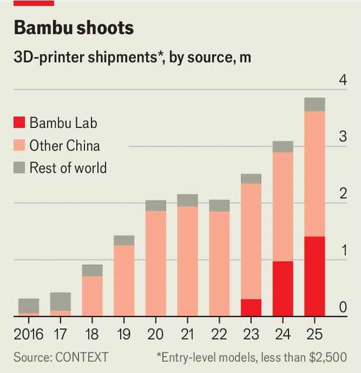

China has captured the market for hobbyist 3D printers
Amid Western wariness, it is struggling to do the same with high-end machines

Oct 15th 2026
The fastest-growing industrial product in China today is not the electric vehicle, lithium-ion battery or even humanoid robot. It is the humble 3D printer for hobbyists. Once geeky curios, 3D printers have quietly become one of China’s most successful consumer electronics. Exports of the machines grew by 90% in the first half of this year. In the past decade China’s global market share has risen from 19% to 96%, ending the dominance of Western firms.
The personal 3D-printing market is now split among the “four little dragons of Shenzhen”, says Chris Connery of Context, a London-based market-intelligence firm. Creality, Anycubic, Elegoo and the industry’s leader, Bambu Lab, reign supreme globally (see chart). Their success shows, yet again, how fierce competition in China combined with generous government support can help improve quality and drive down export prices, making Chinese products hard to beat.

The printers work by building objects layer by layer, usually by extruding molten plastic. Invented by Chuck Hull, an American, in 1983, they long remained expensive, unreliable and difficult to use. Today they routinely sell for a little more than $500 and have the sleek aluminium finish of an Apple computer. Comparable entry-level printers from Western firms start at more than double the price. Artificial intelligence allows users to create print designs for such things as tools, parts or toys by describing them in natural language rather than using complicated design-software. Just as Chinese factories helped to turn drones into recreational devices (as well as game-changers in warfare) by achieving large-scale production at low cost, so they are now doing with 3D printers.
Price wars have eaten into the printer dragons’ profits even as sales boom. But the firms still excite investors. Bambu Lab was founded in 2020 by alumni of another Chinese company, DJI, the world’s leading dronemaker. The printer-maker is reported to have a private valuation of about $10bn. Last year DJI itself invested in Elegoo, a Bambu rival. Creality listed on the Hong Kong Stock Exchange in May. It boasts a market capitalisation of HK$12bn ($1.5bn).
The government cherishes 3D-printing firms. The business featured in its “Made in China 2025” industrial plan, which was launched in 2015 to ensure domestic strength and self-reliance in high-tech manufacturing (much to the West’s concern). Officials see 3D printers as a way to produce components of aerospace, health care and military equipment, for which China often relies on Western suppliers. Policymakers have directed research institutes and state-run firms to buy them.
Some competitors say Chinese firms have profited from Western open-source printing software. Last month an American court ruled that Bambu Lab had infringed on four patents held by an American company, and ordered it to pay $27.6m in damages. Although Chinese firms have captured the consumer market, they have struggled to do so for industrial 3D printers. Firms are wary of relying on Chinese products if it involves feeding them with sensitive designs (though Britain’s defence ministry has been using Bambu printers, its government admits). Outside China, top-of-the-range machines are still mostly supplied by American and European outfits. They can sell for millions of dollars.
Undeterred, Chinese suppliers are creating a new form of manufacturing at home and abroad. They are pioneering “3D-printing farms”—facilities with as many as 5,000 desktop 3D printers that operate like factories. Several have been built in China this year. Printing farms can mass-produce trinkets for zany consumer trends in short order, replacing expensive and slow injection-moulding techniques. Like the printers themselves, their output will be higher quality and cheaper than what came before. ■
Subscribers can sign up to Drum Tower, our new weekly newsletter, to understand what the world makes of China—and what China makes of the world.